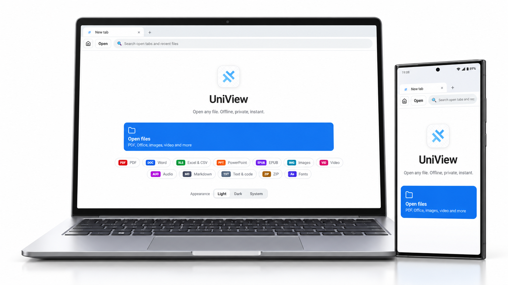

One app, many formats
From documents and books to code and archives, UniView brings your files together in one place.
One private place to open your files, connect your devices, and review your agents’ work.

MADE FOR THE FILES YOU WORK WITH
Your computer’s files, ready on your phone. Open a document or stream a video directly over your own Wi-Fi.
Pair your devices, choose the folders to share, and browse them directly. Large videos stream as you watch.
Less time searching for the right app. More time getting to what matters.
From documents and books to code and archives, UniView brings your files together in one place.
Open files in tabs, switch between them, and find recent work in an interface that feels natural.
Your files stay on your device. No account or telemetry, and no cloud upload required to view them.
Give your coding agents a place to show their work. UniView opens files and structured views, then brings review requests to you for a clear decision.
Explore agent integration ↗Use MCP or the command line with your coding workflow.
Open files, dashboards, and review receipts in UniView.
Approve or request changes with optional feedback.
Whether it’s a report, a photo, a slide deck, or a line of code, there’s room for it here.
See how to get started →Open local files without an account or a cloud upload. When you connect your devices, they talk directly over your local network.
Read about privacy ↗Your documents are rendered on the device. No telemetry or cloud processing.
Only selected folders are accessible to paired devices. Access is read only.
Stop sharing, remove a paired device, or revoke an enrolled agent from the app.
No. You can open local files without signing in. Device pairing also works without an account.
UniView is a viewer. Editing and annotation are not currently supported.
Device browsing works on the same local network. It does not use a cloud relay or provide remote internet access.
UniView connects to external coding agents through MCP or the CLI. It displays their work and provides a human review workspace.
Review receipts can be read on the phone. Approval and change requests are made on the computer.
Supported formats have limits. For example, PowerPoint charts and equations use placeholders, and password-protected PDFs are not supported. Text and hex fallbacks are available when a file cannot be rendered.
UniView brings a familiar, focused home to the files you already have.
UniView targets Windows, macOS, Android, and iOS. See the project README for build and installation instructions.
Choose your platform